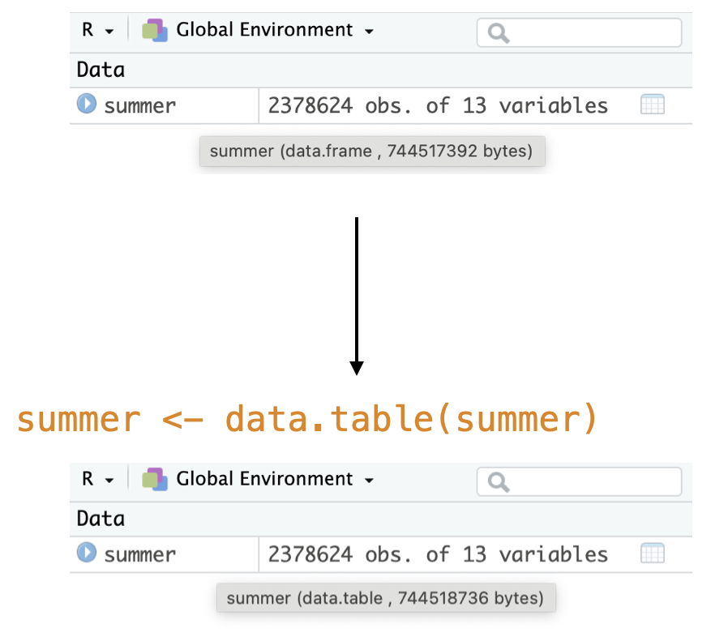
data.table packagedata.table?A versatile R package that is a high performance version of base R’s data.frame.1
Benefits include:
Computational efficiency
Concise syntax
No dependencies
Tested against old versions of R
Uses: data wrangling, reading/writing files, handling large data, and much more!
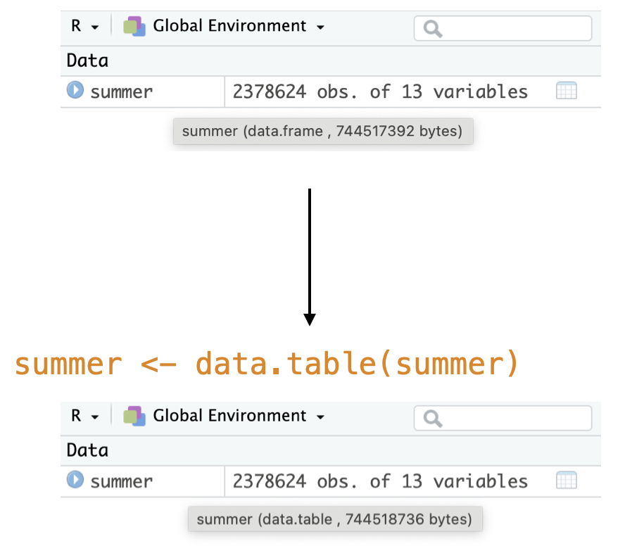
Select: extract columns in data
Mutate: create new variables (columns) in data
Filter: extract rows in data that meet certain logical conditions
Arrange: sort rows (observations) by variables
Group by: group the data based on variable(s) in data
Summarize: create summary statistics, usually on grouped data
data.table syntaxThe six main verbs all follow a three part syntax:
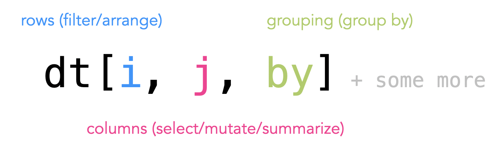
pets_dt is collected on students who have one pet
pet: animal student has
n_classes: number of classes the student is in
hours_hw: hours of homework the student has
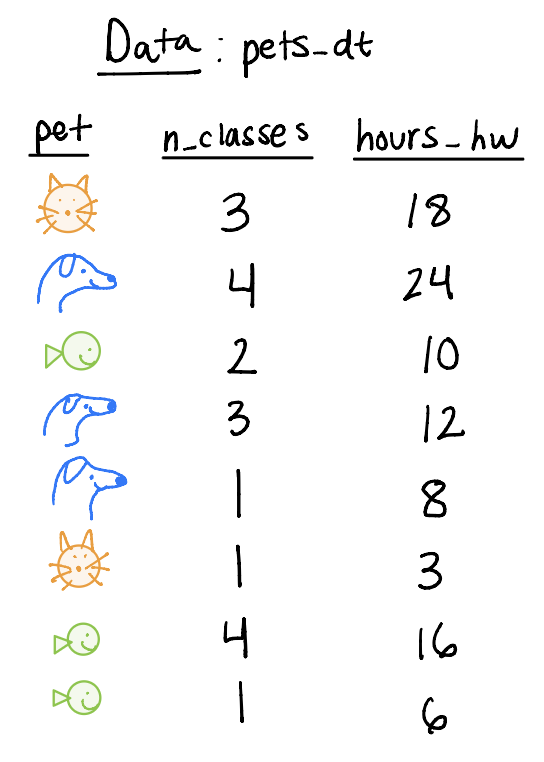
We can select columns to keep in our dataset
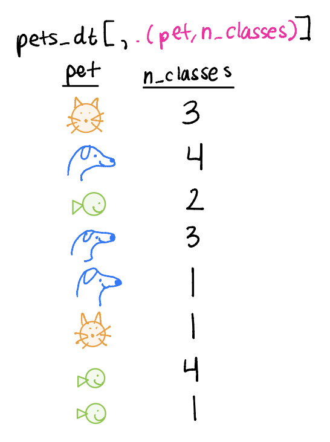
We can add (mutate) variables to the dataset, keeping the same number of rows as before
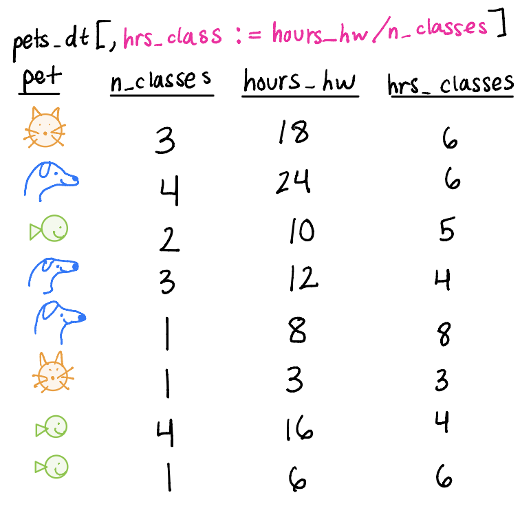
We can filter for particular type of row based on a logical statement
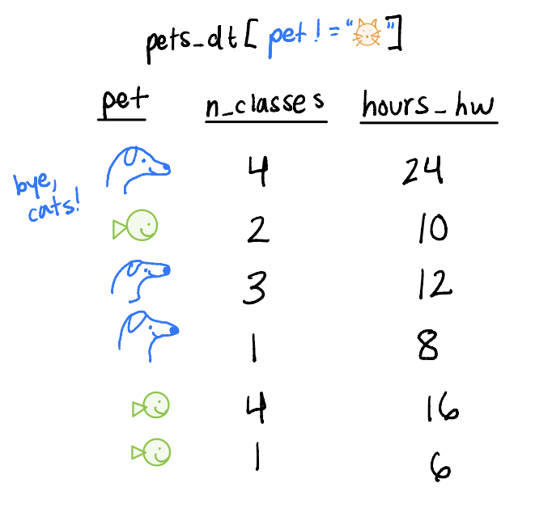
We can arrange the dataset by a particular variable(s)
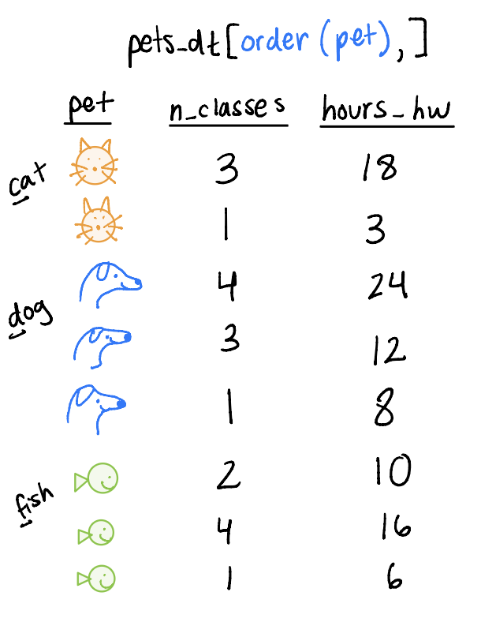
We can create summary statistics (summarize) by particular groups (group_by)
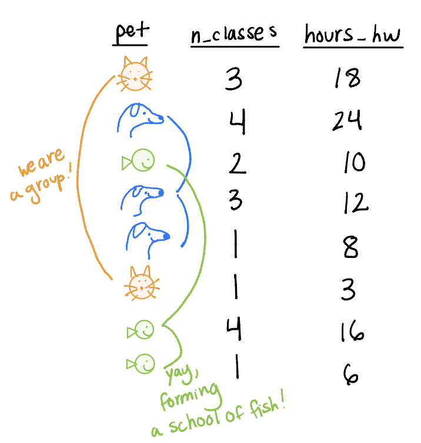
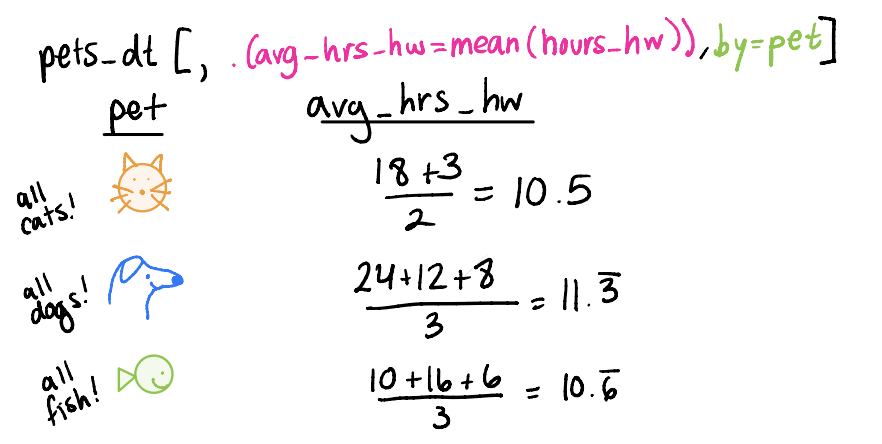
We might also want to join two datasets, meaning we combine them based on the information in each respective one.
In data.table, joins are supported by the base syntax:
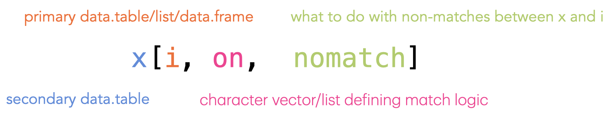
Note that joins are right joins by default in data.table!
Equi joins: find common elements between the two datasets to combine
Inner Join Example:
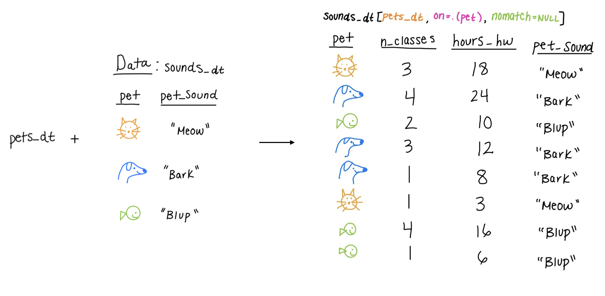
Non-Equi Joins: match rows based on comparison operators other than strict equality
Overlapping Joins: match rows based on overlapping ranges between elements
foverlaps() functionRolling Joins: match rows based on the nearest value in a sorted column
What if we wanted to pair multiple of the six main verbs together? For example, filter pets_dt to remove the cats and then arrange by hours_hw?
no_cats_dt and then order that.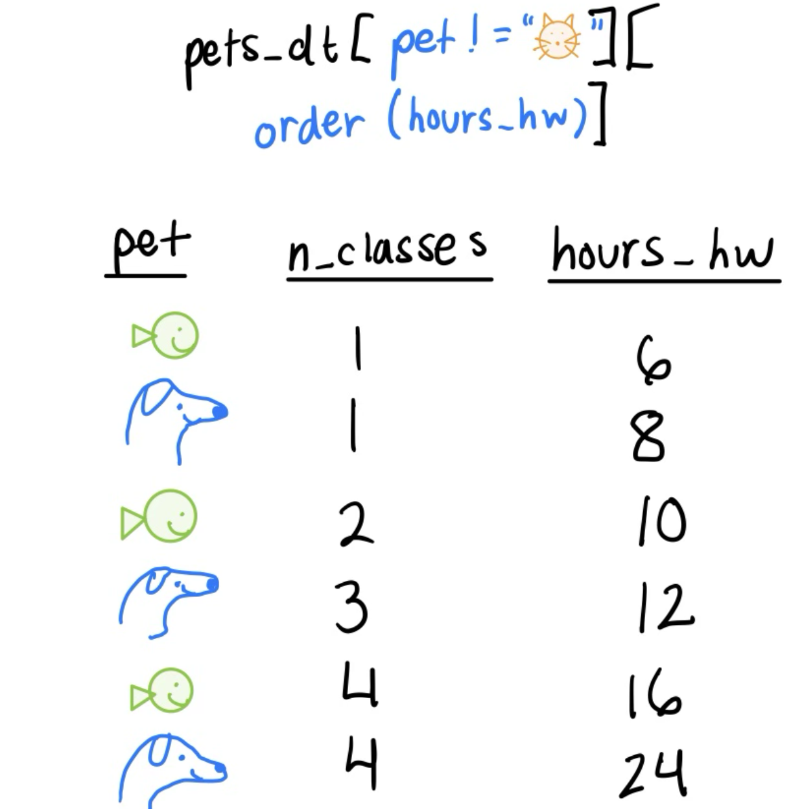
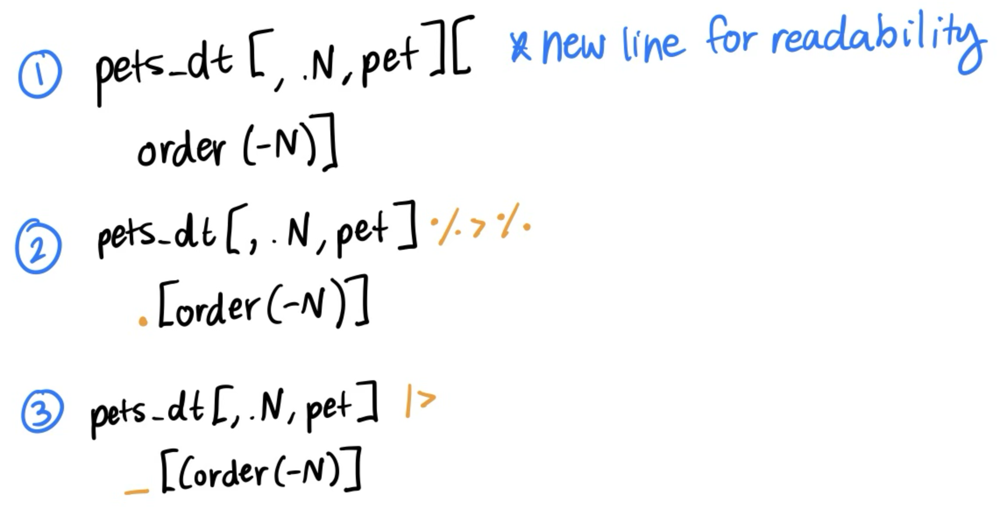
fread() and fwrite()To (a) read a file into R or (b) save a file to home directory, fread() and fwrite() are efficient and support several file types.
Supports:
.csv, .tsv
Other delimited files (semicolon, colon, pipe)
Compressed files with .gz, .bz2 extensions
fread()nrow: number of rows to read in pet n_classes hours_hw
<char> <int> <int>
1: cat 3 18
2: dog 4 24
3: fish 2 10skip: row number or string match to start reading fromfread() (cont)select: columns to keep pet
<char>
1: cat
2: dog
3: fish
4: dog
5: dog
6: cat
7: fish
8: fishdrop: columns to removedata.table object creationConvenient and readable for creating small datasets
Let’s say we are investigating the relationship between lot area and sale price and we want to see how it varies by driveway pavement.
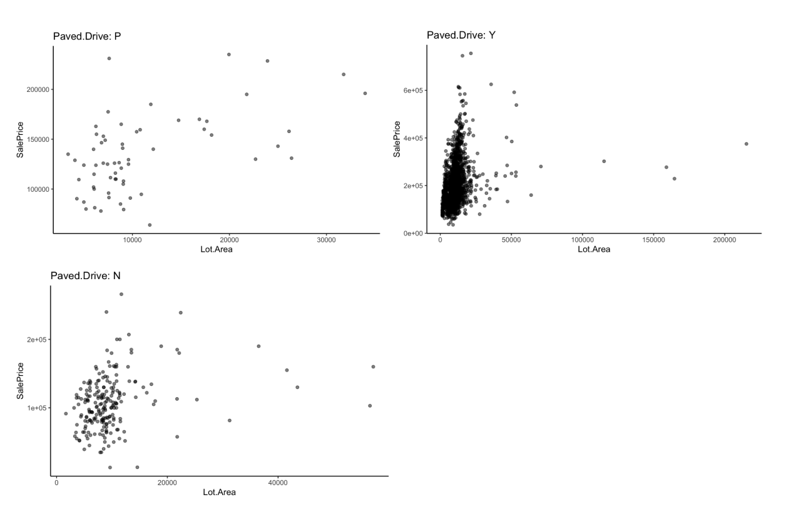
With data.table we can also create a distinct model for each group. For example, we can fit a linear model for sale price of homes in Iowa (SalePrice) for each neighborhood in the dataset:
We can then cross-compare the coefficient estimates and p-values for the covariates in our model to see how the differ between neighborhoods:
Old Town, Ames, Iowa:
| Characteristic | Beta | 95% CI | p-value |
|---|---|---|---|
| Lot.Area | 5.0 | 3.5, 6.4 | <0.001 |
| Bedroom.AbvGr | 6,895 | 1,299, 12,490 | 0.016 |
| Full.Bath | 17,015 | 5,888, 28,143 | 0.003 |
| Year.Built | -279,362 | -651,881, 93,157 | 0.14 |
| Yr.Sold | -268,748 | -625,248, 87,751 | 0.14 |
| Year.Built * Yr.Sold | 139 | -46, 325 | 0.14 |
| Abbreviation: CI = Confidence Interval | |||
Northridge Heights, Ames, Iowa:
| Characteristic | Beta | 95% CI | p-value |
|---|---|---|---|
| Lot.Area | 18 | 15, 22 | <0.001 |
| Bedroom.AbvGr | -14,055 | -30,965, 2,855 | 0.10 |
| Full.Bath | 5,483 | -36,505, 47,471 | 0.8 |
| Year.Built | -2,313,155 | -13,425,305, 8,798,994 | 0.7 |
| Yr.Sold | -2,315,556 | -13,410,216, 8,779,105 | 0.7 |
| Year.Built * Yr.Sold | 1,156 | -4,376, 6,689 | 0.7 |
| Abbreviation: CI = Confidence Interval | |||
tidyversedata.table and tidyverse are great tools for wrangling data. Luckily, we are not confined to just one of them!1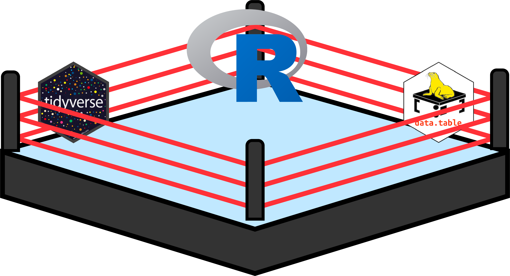
dtplyrPerhaps you have some experience with data wrangling in the tidyverse, but you need the efficiency of data.table.
The dtplyr allows for data.table-like efficiency while still writing code in tidyverse, with a few small modifications.1
data.table is computationally efficient?This Stack Overflow thread explains a bit about memory usage
Visit this vignette to learn about keys and this vignette to learn about indexing.